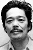

Also known as:子連れ狼 地獄へ行くぞ!大五郎 (original title)
Country:Japan, 83 minutes
Spoken languages:Japanese
Genres:Action, Adventure, Drama, Fantasy, History
Director(s):Yoshiyuki Kuroda
Writer(s):Tsutomu Nakamura
Video Codec:Unknown
Number: 151


Certification:
Storyline:
In the sixth and final film of the Lone Wolf and Cub series, the final conflict between Ogami Itto and the Yagyu clan is carried out.
Cast: 


Medium: Bluray,
Comments: Part of: Lone Wolf & Cub - The Criteron Collection
Loaned: No
Aspect ratio: Unknown